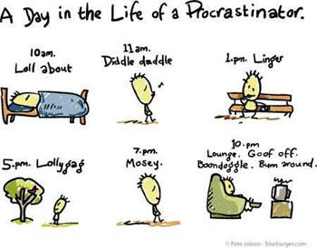

GRAPHENE - THE BLACK MAGIC -Shivam Bhardwaj,BVCOE
Diamond is the hardest substance; Silver is the best conductor of electricity. These two statements were true for the last decade. But now, Diamond is the hardest natural substance; Silver is the best natural conductor of electricity. These statements need to be updated, as the scientists exploited the arrangement of simple carbon atoms to give way to the one of the most interesting discovery of the 21st century, the Graphene.
Graphene, in simple terms, is a thin layer of pure carbon. It is a single, tightly packed layer of carbon atoms that are bonded together in a hexagonal honeycomb lattice. Being one atom thick, it is the thinnest compound and the lightest material known to man (with 1 square meter coming in at around 0.77 milligrams). It is the strongest compound (100-300 times stronger than the steel) and the best conductor of heat and electricity at room temperature. Being one of the best light absorber (reflecting less than 2.4% of light), it is unnaturally black in appearance.
This wonder was ‘predicted’ in 1859, but it took almost 150 years to create grapheme, that was pure and environment friendly. Even the discovery of graphene was an intricate event when the conventional high-tech techniques were replaced by a ‘device’ available for Rs.20 in any stationary shop. The way of extracting graphene changed when two scientists at the University of Manchester extracted it from a graphite block using a scotch tape in 2004. They received a noble prize for this in the year 2010.
But what can Graphene be used for? Theoretically it can be used in a very wide range of fields.
One of the promising applications of graphene is in semiconductor physics where it is used to sustain the failing Moore's law, and can be used to create a 10GHz transistor. Other applications include foldable touchscreens, energy storage,.... much more.
ALIENS- FACT OR FABLE-Aishwarya Kaul,BVCOE
Any living creature in the cosmos which is unfamiliar to us is an alien. The existence of liquid water under the surface of mars, or Jupiter’s sixth moon Europa having liquid water, and reports of Kerala receiving red rains containing microbes are all strong pointers towards existence of extraterrestrial or cosmic life. There are many proponents including Stephen Hawkins and Leonardo Da Vinci to support the existence of aliens in the universe. Though there is no record of a particular period of Leonardo’s life, it is believed that during that time he came across a cave and got enlightened by aliens. This encounter gave him immense knowledge and he drew designs of helicopters, aircrafts and robots which later came into existence through technological advancement. He drew grotesque heads resembling aliens and also paintings which when mirrored and overlapped gave images of aliens like The Great Mona Lisa. A cathedral in Scotland presented the double helix structure of DNA on one of its pillars and the world map even before they were discovered. It has a portal which can be opened only through particular sound frequencies which we humans have not been able to replicate. All this knowledge can only, possibly be given by god or aliens, both of which are unknown and more evolved than us.
The existence of extraterrestrial life is supported by real encounters:
- US Army official encountered light in a forest which touched it and a sequence of 1010 combinations ran in his head. It was translated to ‘Mission Development of Humanity’.
- Christopher Columbus was guided by divine light to a new continent.
- Aliens control all catastrophes and this fact can be strengthened by actual sightings of a strange light before every natural disaster.
Aliens’ existence is a fact, not yet proved beyond doubt, but there is someone superior to us who since time immemorial has guided us to advance. Only a chosen few in history have actually contributed to development of technology like Einstein, Newton and it is believed that they received knowledge from aliens. It has been stated that even the Hindu gods with all their ‘Vimanas’, ‘Shastras’ and heavenly powers must have been other worldly beings.
And I am in favor of believing the fact because, Kurt Gödel has proved that it is not possible to prove all statements that are actually true and Spencer stresses that if something is unknowable, it predicates some knowledge of the thing existing.
PHONEGAP
PhoneGap is an open source mobile development framework. The framework is most suited for developing cross mobile compatible applications. PhoneGap was produced by Nitobi and later purchased by Adobe Systems in 2011. With the passage of time, PhoneGap came to be known as Apache Callback. The beauty of PhoneGap is that we are able to reuse our existing web developer’s skills because of which we have a shorter learning curve and faster development. It’s completely built upon existing web standards and backed by large stakeholders like Google, Microsoft, BlackBerry, Intel, and many more.
There are many Advantages of PhoneGap which includes easy writing of the code and quick installation of the app on a number of mobile platform. PhoneGap plug-ins can be included in your projects. It enables software programmers to build mobile applications using JavaScript, HTML5, and CSS3, instead of relying on platform-specific APIs. The core of PhoneGap applications uses HTML5 and CSS3 for rendering, and JavaScript for logic. It enables wrapping up of HTML, CSS and JavaScript code depending upon the platform of the device. It extends the features of HTML and JavaScript to work with the device.
PhoneGap currently supports development for the operating systems Apple iOS, BlackBerry, Google Android, LG web OS, Microsoft Windows Phone Nokia Symbian OS, Bada, Firefox OS, and Ubuntu Touch. The software underlying PhoneGap is Apache Cordova which is an open source software.

In October 2011, PhoneGap was donated to the Apache Software Foundation (ASF) under the name Apache Cordova. Through the ASF, future PhoneGap development will ensure open stewardship of the project. It will remain free and open source under the Apache License, Version 2.0.
The next big thing from ISRO-Udit Khanna, BVCOE
While Indians have still not stopped going gaga over the success of ISRO’s Mars Orbiter Mission (MOM) in a maiden attempt, the brilliant minds who made this possible have already started burning the midnight fuel working upon the next big thing: IRNSS (Indian Regional Navigational Satellite System), being popularly tagged as The Desi GPS! The IRNSS project, approved by the Indian government in May 2006, shall provide the country with assured navigation service for vital civilian and military applications without having to depend on another country. The need for such a system was realized during the Kargil War in 1999, when the US Government denied GPS support for military surveillance to India. IRNSS shall provide standard positioning service to all users, covering India as well as 1500 km beyond its borders, with an accuracy better than 20 meters.

Clearly the manifestation of a massive project, it is a constellation of seven satellites, out of which three satellites IRNSS – 1A, 1B had been put into orbit sometime ago, while another successful launch (IRNSS-1C) was achieved in November 2014. IRNSS 1D is expected to join the league no later than the first quarter of this year. We may also expect the indigenous navigational system to put India a step ahead in the Internet of Things (IoT) technology, providing secure information sharing between all types of devices across the nation.
Whatever all may be cooking in the minds of scientists at ISRO, this project is definitely going to make big news once it is fully functional in near future, and we certainly wish the team all the best!
The Science of Lying-Priyansh Singh, BVCOE
Lying comes as a second nature to all of us. All of us are liars. And we often tell lies to slip out of a difficult situation or get into one. Some of us are compulsive liars whatever we say is a lie and we need to check whether or not we are lying. On the other hand there are people like me who have a fascination on how people function, display emotions and obviously LIE.
Leonard Saxe, professor of psychology at Brandeis University, points out that most of us receive conflicting messages about lying. Although we're socialized from the time we can speak to believe that it's always better to tell the truth, in reality society often encourages and even rewards deception. Show up late for an early morning meeting at work and its best not to admit that you overslept. "You're punished far more than you would be if you lie and say you were stuck in traffic," Saxe notes. Moreover, lying is integral to many occupations. Think how often we see lawyers constructing far-fetched theories on behalf of their clients or reporters misrepresenting themselves in order to gain access to good stories.
Let’s get something’s straight about lying:
- 1. Lying is a Co-operative process: Both the person who is deceiving and the person who is being deceived are equally responsible for the outcome of the situation.
- 2. Not all Lies are harmful: Some lies like meaning less pleasantries “I’m Fine” or “No trouble at all” are not harmful. An "official" lie actually misleads, deliberately conveying a false impression. So complimenting a friend's awful haircut or telling a creditor that the check is in the mail both qualify.
- 3. We are against lying but we are covertly for it: It is part of our culture. It has been woven into our culture over centuries. It comes as easy as breathing to us. Think Dante, Shakespeare, News, Mahabharat.
Studies show on a given day you may be lied to between 10 to 200 times. Strangers lie three times within the 10 minutes of meeting each other. We start at an early age and we never stop. We have created for ourselves a world full of spam, fake digital friends, ingenious identity thieves and world class Ponzi schemers. It has become impossible to navigate through this cluttered world. So how do you do it ?
“Everyone is willing to give you something for whatever they are hungry for. And if you don’t want to be deceived you need to know what it is that you are hungry for”
LIE SPOTING
Paul Ekman is an American psychologist who is best known as “the best human lie detector in the world”. He is a pioneer in the study of emotions and has created the fundamentals for lie detection. He created an ‘atlas of emotions’.
- 1. Verbal Dodging: A person who maybe over-determined in their denial will resort to formal than informal language. They also use distancing language like “That Person”, trying to distance themselves from their subject. Also sometimes they use qualifying language or spicing up with details, hoping to force their lie over the subject. If you suspect someone is lying or making up a story, just ask them to repeat the sequence of statements in reverse order. A person telling the truth will have no problem recounting the details where as a person who is lying has to put in an effort to remember.
- 2. Body Language: If someone is quiet and not providing any verbal cues then they start giving some non-verbal cues. Liars are known to freeze their upper body while lying. They tend to look you in the eyes a little too much in order to compensate for the myth that liars don’t. Our body slips up whenever we are lying consciously. Some people say no while they are nodding yes. People leak a shoulder shrug or maybe a masking smile also called as “Duping Delight”. It is a smile that one slips up when he or she has gotten away with the lie. Sometimes they might be giving you the finger while showing that they are cleaning their eye. More often these slips or leaks happen when people try to hide a feeling and they crack through. Murderers are known to show a glimpse of sadness. There are thousands of these signs, and alone they mean nothing. It’s the cluster that makes it a fact that the other person is lying. Facial Action Coding System is a system to taxonomize human facial movements by their appearance on the face. It divides the face and facial muscles into Action Units and Action descriptors which can later be decoded to see the meaning.
When you combine the science of reorganizing deception with the art of looking, listening you except yourself from collaborating in a lie.”